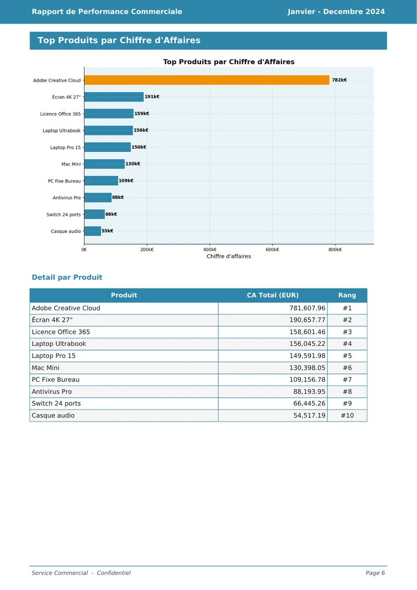
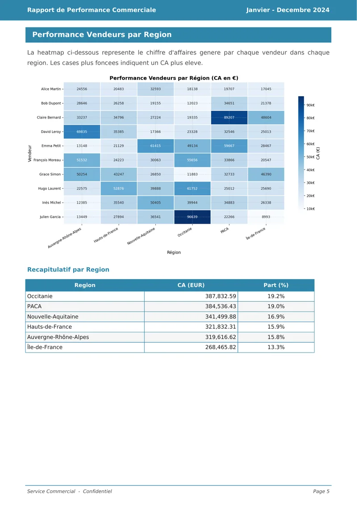
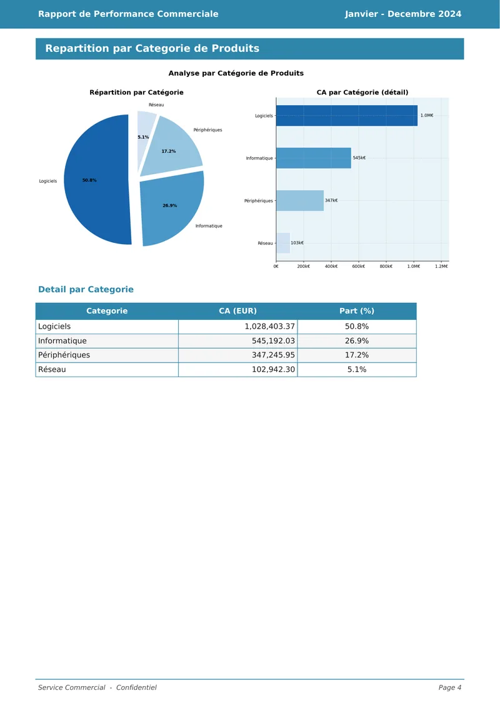
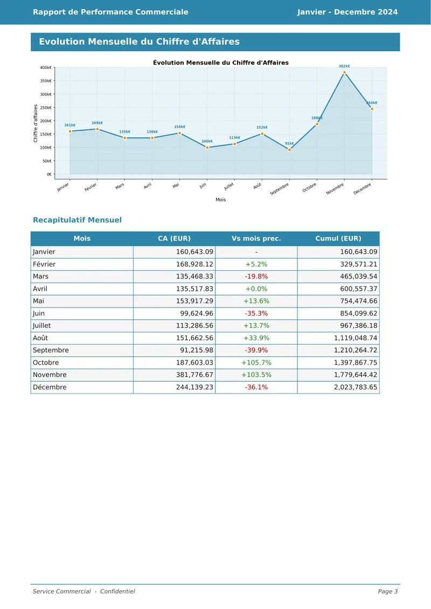
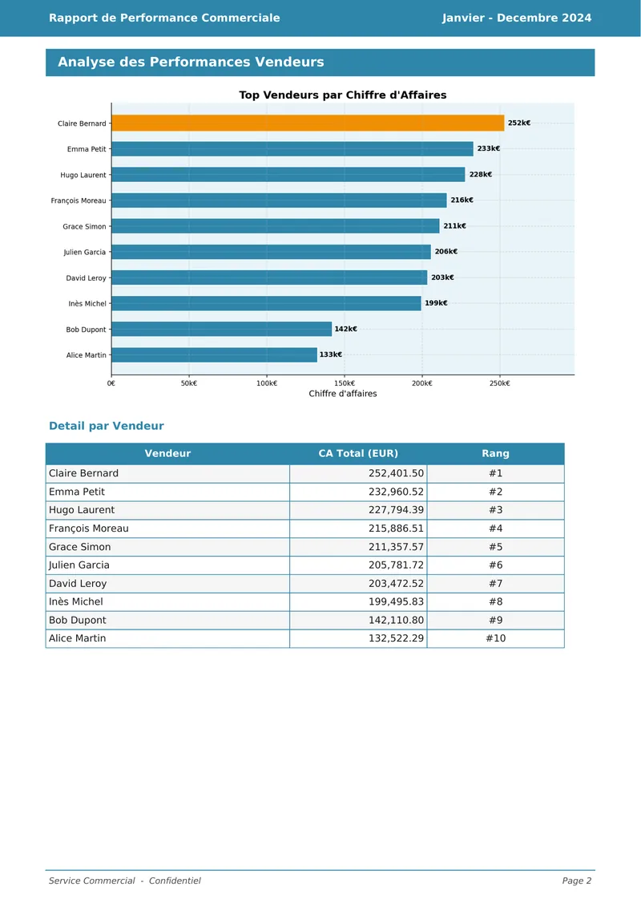

Le résultat
Un tableau de bord et un rapport PDF, prêts à présenter
Rapport « Janvier – Décembre 2024 »
12 fichiers · 1 180 lignes
CA comptabilisé0,00 M€
Commandes0
Panier moyen0 €
Lignes analysées0
Pic : 382 k€
Logiciels51,0 %
Informatique27,0 %
Périphériques17,0 %
Réseau4,9 %






Rapport PDF · 6 pages
Données nettoyées en CSV
Diagnostic qualité